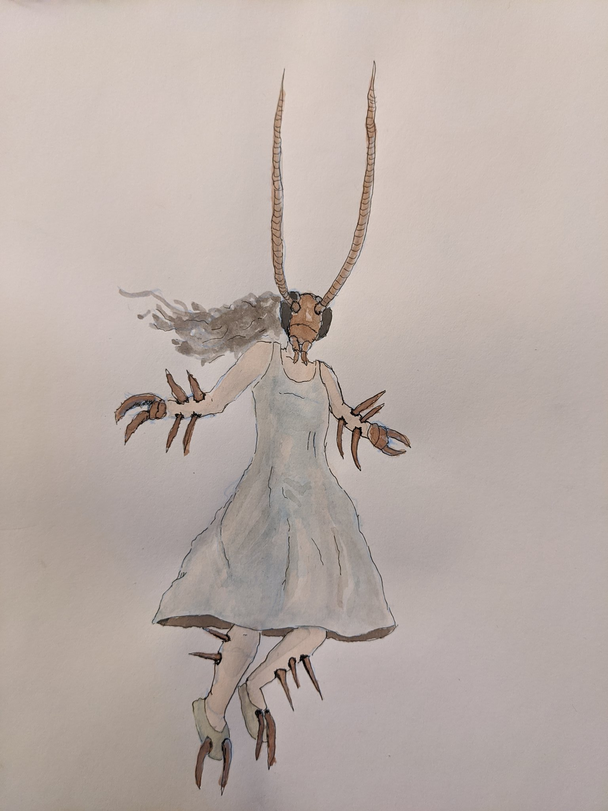

On the new Dirty Modernism
Kafka, Freud, Dolar, and Danishevsky

Let us trace the voyages of one anthropologically immanent quality—regarded as one of the seven deadly sins both in Catholicism and Russian Orthodoxy—among several authors working in one line of thought—let’s call it the psychoanalytic-political. We will speak of greed (Latin: Avaritia), or more specifically, of “sucking”, “bloodthirstiness” and parasitism—and about what these properties “stick” to, or to whom they are attributed.
Marx considered “wolfish greed” a property of capital. The word “sucking” and its derivatives are used in Capital at least a dozen times. They denote the parasitic extraction of labor from workers, both adults and children—in a strictly economic proportion—subjected to the logic of “communicating vessels” (as detailed by PascalTranslator’s Note: Appears in Pascal’s 1653 treatise “on the equilibrium of fluids and on the weight of the air”; it explicates that an increase in pressure at a single point in a confined non-compressible fluid results in a transmission of the pressure throughout the volume of the fluid in the container, such that the net pressure variation remains the same.
). Capital, writes Marx, “is dead labor, which, vampire-like, lives only by sucking living labor, and lives the more, the more labor it sucks.”
For Marx, greed is connected intimately with dying; its role consists in strengthening the dead to the living’s detriment. That is to say it is this greed we mean—immiserating, necrotic—and not some kind of “thirst for life.”
Greed as a phenomenon of social life corresponds to greed as an unconscious ontological component of the psyche. In the psychoanalytic theory of Melanie Klein, greed, or one’s “level of greed”, is one of the “innate” predetermined properties of the individual as well as one of the defining modes of early object relationships. In her final work Envy and Gratitude (1957), Klein gives a formulation of greed as an “impetuous and insatiable craving, exceeding what the subject needs and what the object is able and willing to give. At the unconscious level, greed aims primarily at completely scooping out, sucking dry, and devouring the breast: that is to say, its aim is destructive introjection.”
Considered functionally, however, greed exists merely as an operator in her theory, akin to those found in formal logic. Its meaning is defined as “that which prevents saturation.” Greed, according to Klein, can serve as one of the obstacles to the introjection of the “good breast” and its sweet contents, which serve to successfully establish the “good object”, which in turn, provides the basis for the baby’s future ego. A “Strong Ego” underscores the ability to endure frustration (hunger, pain, and other various displeasures and vexations) without destroying the capacity for self-identification. Found in the very depths of this psychoanalytic matryoshka is man’s very essence, a certain core of Ego, a self, the shadow cast by the hence-introjected “good object”. This “Strong Ego”—let’s for now elide the obvious disadvantages of this formulation—is what precludes the possibility of waking up one fine morning as someone else entirely.
Today this thesis comes in handy when encountering a novel form of subjectivity: social media profiles. Social networks offer a new topography, a situatedness wherein all significant rituals, from birth to death, take place. In light of this, the problem of preserving the “I” under capitalism—from the effects of one’s own or someone else’s greed— should be considered in connection with the peculiarities of existing socio-political formations. Our eating habits have become digitized—every morning and evening finds us drinking the digital milk of social networks. Who is parasitizing whom? Are we feeding on capitalism or is it feeding on us? We cannot take a step without the big Other being informed; even our fantasies are locked in the pop up windows of porn sites. Theorizing the way capitalism colonizes our psyche, Mark Fisher wrote: “Capitalism seamlessly occupies the horizons of the thinkable. [Frederic] Jameson used to report in horror about the ways that capitalism had seeped into the very unconscious; now, the fact that capitalism has colonized the dreaming life of the population is so taken for granted that it is no longer worthy of comment.” When a certain impersonal organism, for example a bureaucracy, exercises control (including its biopolitical forms) it takes on a cybergothic outline. In his work Capitalist Realism (2009), Mark Fisher wrote, “The most Gothic description of Capital is also the most accurate. Capital is an abstract parasite, an insatiable vampire and zombiemaker; but the living flesh it converts into dead labor is ours, and the zombies it makes are us.”
Gregor Samsa—envisioned by Kafka as an ideal screen for projections and a favorite cardboard target for philosophical exercises—escapes from capitalism, by falling into … capitalism. He wakes up in a different system of oppression than before: before awakening, he was exploited, he had a corporate boss, familial responsibilities. Now, one can say, he has subsidized “basic income” and social housing, but he remains powerless and dehumanized. He is an arthropod, but if he lived today (and had a Facebook profile), no one would notice.
His story is a story of a man who was swallowed by greed, greed figuring as an inability to be satiated, to give away the products of one’s labor, to participate in social exchange; it manifests as a refusal to be productive, to show gratitude towards others. Waking up, he feels the desire to sleep further - but cannot. He is unable to roll over onto his favorite side and fall back to sleep. He feels hunger - but gradually loses the ability to absorb food; he holds it in his mouth before spitting it out, and often the food remains completely untouched. He becomes touchy and irritable, even aggressive, tries to attack the maid, is dissatisfied with his care, climbs into the dirtiest, uncleaned places in the room as a sign of a silent reproach …
He transformed into an insect - but did he remain human?
In the humanistic liberal tradition, we cannot ask such a question: after all, we do not ask whether an autistic individual is a person. Of course, Gregor remains human—only locked inside a bug’s body. The main thing, after all, is that he himself feels himself to be human, thinks, senses, perceives those around him—true, often only as obstacles to his “nothing”. A primary pastime, which can be reduced, in general, to doing nothing. However, are we in the right to ascribe such pretensions to the bug?
To the bug or to the man?
Let’s just say: he thinks he is a person. He was told he was a person; he was interpellated as a person; until very recently, he was figured as possessing personable qualities within the system of social and family ties characteristic of “capitalism”. Mental illness today is solely discerned in relation to one’s ability to stay within a system of social relations—yet Gregor completely fell out of social life. It is telling that his relatives wanted to call a doctor: Gregor—as Kafka writes—became very ill. True, everything turned out to be quite a bit more serious than a slight dizziness, which Gregor imagined was the reason behind his refusal to open the door to the courier sent by the company—and here again a hint of greed: not going to work means Gregor keeps the cash his employer had entrusted to him.
As a result of the devastating work of the disease, Gregor is left with few sentiments that mark him, for our consideration, as a person, or rather, as a “sick” person. He wants to listen to his sister play the violin, hug his sister, calm his mother, yet when he leaves the room he merely succeeds in frightening her to death. This is already a perversion: on some level he knows that he is a bug, and that she will be struck down by his mere appearance. Yet at the same time, on another level, he remains ignorant. There are even times when he dreams of taking family matters back into his own hands… Gregor holds in his mind two mutually exclusive ideas without resolving their contradictions—this is the scheme of his perversion. Greed is his “infant” sin. The sin of adult Gregor is that he simply does not know himself.
He is an insect in possession of a soul that is a mystery even to himself. This “insect” subject position appears somewhat familiar to us via culture and language: discussions about whether women and blacks have a soul, or whether “degenerative” art is art, or whether gays can be legally married are still fresh in our historical memory. Is an excluded thing still a part of the overall picture and owed the same rights? Can we endure ambiguity? Can the dead, the absent, the othered, re-enter the space of the living? Can an insect live in an apartment? The orthodox tenants of the Samsa family would venture on no: liberal logic will not work here. The formalist approach, concluding that Gregor “remains a person regardless” would surely seem to them, with their immense philosophical tradition spanning several millennia, reductionist. Gregor’s sister, who brings him food and cleans his room—that very same “proletariat”—recognizes in him her class enemy, the oppressor, who sucks her life, turns back the clock, and prevents her family from developing.
According to Kafka, the only way to stop being a victim of that huge vampire is to turn into an insect and thereby relieve yourself of the responsibility that the world’s composition, which we call capital, has hung on your neck. But Kafka shows us that by “breaking out” or “opting out” of this world’s composition, you yourself become a vampire. Previously, Gregor’s father was weak and parasitized his family - and now Gregor will parasitize. By making this vengeful transformation and assuming the victim’s position, formerly held by his father, Gregor himself becomes a parasite, a Fisherian “vampire”. In light of this, his sister eschews humanistic reason: “We must be rid of him,” she says, “This is not Gregor.”
Mladen Dolar devotes to Kafka’s Metamorphosis the essay “The Riskiest Moment”; he writes that the moment of Gregor Samsa’s awakening is the moment of “inverted interpellation,” the instance when reality is not recognized as the subject’s own and when self-identification is impossible. Dolar binds this pivotal moment “for thought” to the awakening signal of modernity (the essay is dedicated to 1913, when Metamorphosis was written). But now, in 2018 Russia, we are perhaps even closer to this point of anti-interpellation: in Kafka’s time, this is the minute when Gregor ceases to be interpellated: at the very end of the novel, when the sister, who has been interpellating him as Gregor the whole time of his illness, suddenly anti-interpellates him as “not Gregor”, thus casting him out. This is a rather interesting point, from which it is impossible to go any further or to die properly—the end of modernity. The dried out, self-emptying chitin body of Gregor is not death, but lifelessness itself; a place where life may never come.
We already know that nothing will remain of us but empty shells—a certain slice of big data, geolocations, semi-automatic interactions, likes; innumerable imprints of fully formalized creatures that never existed. Being—the sensation of being— is possible today only through the Other. Descartes articulated this —unconsciously—when he wrote, “But [suppose] there is a deceiver of supreme power and cunning who is deliberately and constantly deceiving me. And since he is deceiving me, then undoubtedly I exist…” And although at the time of the Meditations the big Other was not yet a deceiver, now it is precisely this feeling of being deceived, and not the cogito, that provides reliable proof of one’s existence. In itself, Gregor Samsa—a patriarchal subject who goes to work and provides for his family—is a fiction: no one wants or has ever wanted to be this subject on his own; nobody wanted phallogocentrism. Gregor dies when his sister stops deceiving him: he does not exist—and he never did.
“A ghost—the repressed—returns to the house in the body of the parasite, dropping its clothes. He is neither human nor inhuman—Unmensch, neither animal, nor non-animal—Untier,” philosopher Oksana Timofeeva writes in the article “Animals, That Were Not Called,” which is largely based on an analysis of Kafka’s Metamorphosis. We specify: the repressed is repressed greed. The condition caused by this unconscious greed is a partial necrosis of the psyche, which has sucked itself dry, having completely merged with the fantasy of having its “blood” and thoughts “sucked out” by one of Mark Fisher’s huge cybergothic vampires; one does not need to understand psychoanalysis to see how closely greed and depression can be bound.
So, greed is externalized by Marx, introjected by the subject by Kafka, Freud and Klein and again externalized by Mark Fisher, who opposes the pathologization of depression—arguing rather for its politicization. But it should be noted that in the logic of the latter there is a regressive movement: the responsibility for depression caused by vampiric greed is directly transferred to the social system; capital, and not endogenous causes proper, according to Fisher. This form of projection, we’d like to note, is the primary psychic mechanism “responsible”—according to psychoanalysis—for psychosis, persecution and—according to Freud—paranoia, jealousy and repressed homosexuality. On the one hand, Mark Fisher’s approach to a philosophical understanding of depression is productive because it draws our attention to the economic, social and class determinism of the disease, to its materialistic causes, to its “historicity,” and therein contains a revelatory Marxist self-questioning. But on the other hand, when we see such a clearly regressive logic of projection that locates causality outside the subject, we have the right to ask ourselves how much of Fisher’s thesis, from the psychoanalytic point of view, can sound regressive, infantilizing, or, in the language of the Revolution, perhaps even reactionary.
In what’s come prior, we were able to show how the figure of Greed, an allegory, passes into social relations from the Unconscious. The question of where it came from—whether Klein was right and it is a random innate property of a person, an inevitable imperfection that arises as a consequence of either original sin or evolutionary necessity—already belongs to the purview of the psychoanalytic axiomatic; one of the six or more legs via which psychoanalysis props itself up against philosophy.
Having shown in the last chapter that the proletariat is avaricious, we do not relent. In an effort to rid leftist thought of its, alas, latent idealization and inner splitting, we continue to psychoanalytically, politically and philosophically examine the transformations of the courier Gregor Samsa, a character who is dear to us, if, of course, one can say such a thing about Gregor.
Now, let’s try to write this essay in the spirit of short “Medusa cards” - a format accepted on the site medusa.io so beloved in contemporary Russian journalism, designed as if to explain “with the fingers on one hand” or “like Vasily Ivanovich with the potatoes”Translator’s Note: This is a reference to a popular Russian anecdote featuring the immortalized Red Army Commander Vasily Chapaev. In it Chapaev and a friend swim across the Don river to escape a contingent of White Russians. Chapaev lugs along in one hand a suitcase of what he claims are vital war maps. Once they reach the shore, his friend is dumbfounded to discover the suitcase is actually full of potatoes. “Wait, look here,’’ says Chapaev, picking up a handful and arranging them on the ground. In this way he reconstructs the lay-out of the coming battle.
the difficult moments of modern reality, in an exaggeratedly positive manner. It is assumed that as a result of such an explanation, everything that is obscure will immediately clear up, and the reader - a conscientious product of modern capitalism - will resume consuming.
Card 1.
What happened to Gregor?
Answer: he transformed.
Card 2.
Who did Gregor Samsa turn into?
Answer: Into an insect. Or rather, as established by entomologist Vladimir Nabokov, into an arthropod. More precisely, it is not possible to determine.
Card 3.
Whom did he turn into?
Answer: Into an un-symbolizable nothing, which has no place in culture.
Card 4.
But I heard that he turned into a bug. Why do you think that the bug cannot be symbolized?
Answer: You are on the right track. However he turned not into a bug, but into a woman. A woman, according to the now commonplace Lacanian conviction, cannot be symbolized as a whole (“a woman is not-all”).
Card 5.
And who was he? A man?
Answer: In the prehistory of the Metamorphosis, so terrible that Kafka did not even deign to describe it to us, Gregor provides for the whole family and does not enjoy it; the path to enjoyment, for the patriarchal man he imagines himself to be, is pre-ordained. Gregor’s transformation into a bug, to follow Lacan, is a symptom, the only way for enjoyment to manifest.
Card 6.
Ok. What are your reasons for turning him into a woman?
Answer: It is known that on the eve of the transformation, the defendant, the courier Gregor Samsa, cut out a portrait of a beautiful lady from a magazine and placed this image of his identification in a golden frame; when his sister tried to take the portrait from the wall, he protected it with his cephalothorax.
Card 7.
How often do people in human history turn into women?
Answer: We believe that all people are women, but, strictly speaking, the title of Kafka’s story Metamorphosis (Die Verwandlung) corresponds—in Freud, of course—to the transformation of Judge Schreber into a woman: “Once, in the early hours of the morning, moreover, while he was in a state between sleeping and waking, the idea occurred to him that ‘after all it really must be very nice to be a woman submitting to the act of copulation’. (36.) This idea was one which he would have rejected with the greatest indignation if he had been fully conscious”, Freud writes. And further: “He believed that he had a mission to redeem the world and to restore it to its lost state of bliss. This, however, he could only bring about if he were first transformed from a man into a woman.”
Card 8.
Why did Gregor Samsa have 6 legs after becoming a woman?
Answer: Philosopher, feminist and psychoanalyst Luce Irigaray in her classical work of feminist theory, This Sex Which is Not One, refers to multiplicity as the main property of female sexuality, saying that “a woman’s sexual organs are practically everywhere.” Plurality of pleasure is considered a feminine attribute, as opposed to the male’s “single” phallogocentrism.
Card 9.
Are there any other arguments in support of the argument regarding the multiplicity of Gregor Samsa’s legs as an attribute of femininity?
Answer: Yes. Substantiating this claim about the plurality of sexes, is an enormous book written by contemporary Italian philosopher Lorenzo Chiesa. Based on the psychoanalytic theory of Jacques Lacan, he says that all subjects have two sexes: male and the other. The other sex is the Other, but not “another one”. The female gender cannot be reduced to One, it represents all the other “sexes” at once, as such it always remains “different”, and in total they never give two. “If you believe that one gender and the other, folding, give two, you believe in God,” says Chiesa.
Card 10.
What if Gregor Samsa got analysed by Freud?
Answer: Freud would write the case study of the Spider-Man (or Beetle-Man).
Card 11.
We understand that psychoanalysts do not make diagnoses. However, what diagnosis would a psychiatrist prescribe to Gregor Samsa?
Answer: It will be neither an exaggeration or an inaccuracy to say that Gregor has depression. Like a beetle, he must obviously have hindwings (as Nabokov writes), but he does not know about it and thus cannot fly: in this Gregor is also like a woman who does not know her body and is not familiar with her sexuality.
Card 12.
Okay. Who did Gregor Samsa become, once he turned into a woman? Does he have a job, profession, name, surname?
Answer: In modern neoliberal democracy, it is very difficult to identify with one’s class, one’s origin, one’s homeland; precarity does not allow identification with the profession; for multiplying identifications, only sexuality remains, which, as Freud discovered, is outside the subject’s control being the result of unconscious choices, the consequences of which are more serious today than ever.
Card 13.
Why did Gregor Samsa die, instead of continuing to live as a woman?
Answer: Gregor competed with his sister and lost in the deadly battle of siblings. Here, not only the capitalist, but also the gender-hierarchical dimension of patriarchy is significant. In the Samsa family, in its patriarchal hierarchy, creatures of the same gender and / or position are competitors and wage a war of annihilation: so, while Gregor was active, his father physically declined, when Samsa was “sick,” his father recovered spiritually and physically. The competition between the siblings (Gregor and his sister) bears a deadly character: it is precisely the sister who kills Gregor with a word, and it is her “young body” that eventually straightens up in the train, as life leaves meekly, quietly from beneath Gregor’s empty chitinous shell.
Card 14.
Will we all die too?
Answer: We never existed. We are virtual fossils of “having been through the Other,” deceived not by the other, but by the digital big Other.
Card 15.
Where to escape? into whom to transform?
Answer: In Mladen Dolar’s essay “The Riskiest Moment”, this “transformation” of Gregor, this suspension in between sleep and wakefulness, alongside the absence of rigid “medieval” guilds, of genealogical and other such identifications, is considered the key moment of modernity. Kafka is, one might say, “pure” modernism. But there lingers a suspicion that the time has come for a new, “dirty modernism”, where everyone has transformed into women. In this sense, the prose of Ilya Danishevsky and the entire “Volchekovskoi”, “Colonnovskoi” (from Colonna Publications) tradition in modern literature is indicative (we are talking primarily about Russian literature, but in reality the trend that the “Colonna” draws attention to, is of international importance, and I would deign to talk about books translated and printed as part of this project, as part of a multiplicitous but well-defined separate tradition). According to the poetess Elena Fanailova, Danishevsky’s prose consists of that, as it appears to her and probably will appear to many others, which should only be discussed with a psychoanalyst. Danishevsky’s book Mannelig in Chains consists of stories and poems that tell of the coming of age of a modern LGBT teenager; this is an extremely sexualized narrative where sexual observations and the extraction of truth from micro relations, traditional key points of modernism, are mixed with a Kafkian sensuality, in order that they might irrevocably and finally occur under the flag of absurdity.
Card 16
Will Danishevsky’s hero believe in your dirty modernism?
Answer: A hero with an empty mason jar, which he carts around with him on the metro for a date that never materializes, would laugh at the posing of such a question. This new literary subject is already anti-terpelled, and inaccessible to ideology.
I would like to problematize this point - the point where everything is hilarious and everything falls apart. All structures are fragile, all identifications fallen; our bodies have undergone burning, we have all become women, and the great philosophical House of the Mind (with the direct participation of the philosopher Oksana Timofeeva) teems with animals previously not found in it. All this constitutes a new sociality, which allows us to rethink tradition from these new “nanopositions,” from the perspective of an insect, from the perspective of non-existence; it is a community called Je suis … - followed by a quantifier of non-existence; a community of carriers of European supervalues shot through by ISIS (banned in the Russian Federation). In this new “dirty modernism” no one is ready to die for anything - but if “yes, death” - then only for the ultimate, almost perverted individualism; withdrawn from experience - withdrawn for being too sexual or on an otherwise similar basis; for being too apolitical; for the right to be anti-interpellated, euthanized by the deadened sister of Gregor - the sister of mercy. Gregor Samsa “does not exist” in the same way the long centuries of autists, insects, blacks, women, “did not exist” in the Symbolic order: “Metamorphosing” into the “nonexistent” and “Non-symbolic” is clearly better than “living” in the wretched system of elections provided by modern neoliberal capitalism.
Card 17.
What are you on about?
Answer: In a sense, all of this can be considered implicit slogans of the quietly but steadily ongoing world women’s revolution.
Translated from the Russian by Alex Karsavin
Bibliography:
Данишевский И. Маннелиг в цепях. Предисл. Е.Фанайловой. — СПб: «Порядок слов», 2018
Долар М. Самый рискованный момент. Кафка и Фрейд (пер. с англ. И. Аксенова). — «НЛО», 2012, N 116
Кафка Ф. Собрание сочинений: В 3 т. — М.: ТЕРРА-Книжный клуб, 2009. T. 1. C. 287
Жеребкина И. Введение в гендерные исследования. Ч. I: Учебное пособие/ Под ред. И. А. Жеребкиной — Харьков: ХЦГИ, 2001; СПб.: Алетейя, 2001
Тимофеева О. История животных. Предисл. С. Жижека. — М.: OOO «Новое литературное обозрение», 2017
Фрейд З. Знаменитые случаи из практики. Пер. с нем. — М.: Когито-Центр, 2007
Chiesa L. The Not-Two: Logic and God in Lacan. The MIT Press, 2016.
Декарт Р. Разыскание истины. Рассуждение о методе. Размышления о первой философии. — М.: Азбука, Азбука-Аттикус. Серия: Азбука-Классика, 2017
Долар М. Самый рискованный момент. Кафка и Фрейд (пер. с англ. И. Аксенова). — «НЛО», 2012, N 116
Кафка Ф. Собрание сочинений: В 3 т. — М.: ТЕРРА-Книжный клуб, 2009. T. 1. C. 287
Кляйн М. Психоаналитические труды в 7 тт. Т. 6. «Зависть и благодарность» и другие работы 1955–1963 гг. — Ижевск, «Ergo», 2007
Тимофеева О. Животные, которых не звали. «НЛО», 2015, №2(132)
Фишер М. Капиталистический реализм. — М.: Ультракультура 2.0, 2010
Elena Kostyleva is a poet. She was born in 1977 in Novosibirsk. Worked as a journalist and editor in Moscow. Her poems had appeared in several journals, including Vavilon and Mitin Journal, and she was shortlisted for the Debut prize for young Russian writers in 2000 and independent Bely prize (Russian: Премия Андрея Белого), one of the most important prizes in Russian literature, in 2009. She is a member of Arcady Dragomoschenko prize jury (since 2015). She has published two poetry collections, Legko dostalos’ and Lidiia, and in 2005 was included in the English-language anthology of contemporary Russian women poets (eds. Polukhina and Weissbort, 2005), disAccordi. Antologia di poesia russa 2001–2016 (a cura di Massimo Maurizio, 2018) and Anthologie de la jeune poésie russe: Lauréats et finalistes du prix Début (choix et traduction de Christine Zeytounian-Beloüs). Her poems was recently translated into English for publication in the literary journals n+1 and Modern Poetry in Translation. Member of the board of trustees, ex-jury member of Arkady Dragomoschenko Prize. Kostyleva is studying psychoanalysis and philosophy at European University in Saint Petersburg.